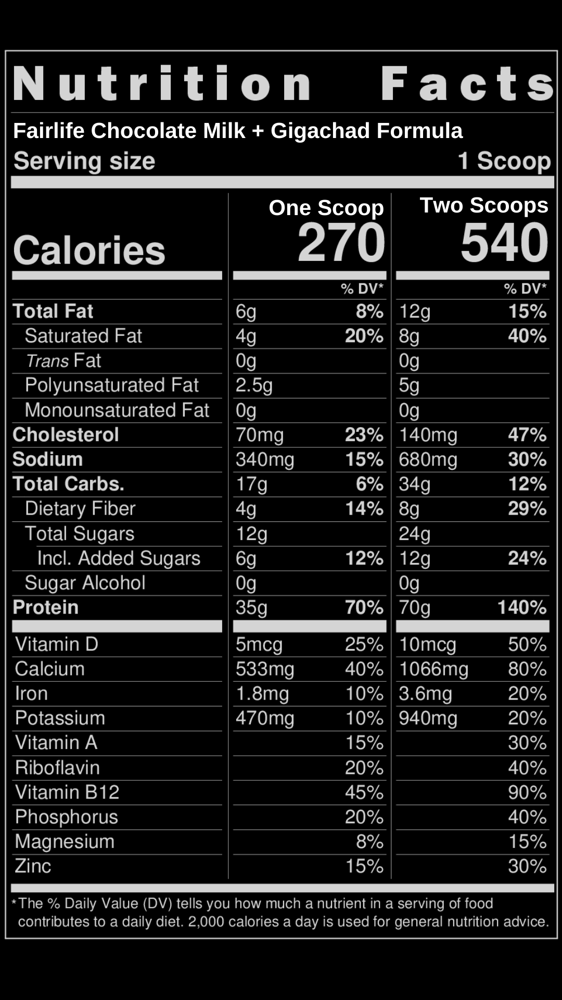

Best Protein. Period.

Protein underconsumption is incredibly common. The recommended daily allowance for protein of 0.8g / kg of body weight is the amount to survive and is like saying a 150lb person should only consume 1100 calories—it’s possible, many people (unfortunately) have to live like that, but that’s a lifestyle of chronic fatigue and poor metabolic health. You should be consuming 2 grams per kilogram, or about a gram per pound of body weight. For most people that means about 150-200 grams per day… but how do you feasibly do that? 175 grams of protein is equal to about 25 eggs A whole chicken 3 ribeyes So the question is, are you eating enough protein? Are you ready to devote your entire day to protein consumption? Protein shakes are an effective, easily digestible and quick way to meet your protein needs. Whey protein is most desired by atheletes because it’s a complete protein, meaning it has all of the necessary amino acids and casein relevant for muscle protein synthesis. You need to vet your protein for heavy metals, ingredient purity, you want to avoid maltodextrin, and control the grams of sugar—then of course, you have to be able to tolerate the flavor so you can develop it into dietary habit you can maintain day-over-day without feeling like you’re sacrificing your sanity. Or, you can be smart and let us take the burden off your shoulders.

THE GIGACHAD SCIENCE MANIAC BALLER PROTEIN SHAKE
1. Scoop out Step One: Get Jacked Grass-Fed Whey Protein
2. For each scoop, pour in 1 Cup of Fairlife Chocolate milk.
B-bbut chocolate milk has sugar! Check out the macros… (macros) B-but I’m lactose inteolrance!! It’s lactose free. You know what to do. Aside: Some people are super-concerned about excess protein being toxic, especially towards the kidneys because of excess nitrogen. Studies have been done on this and to reach a clinically significant threshold for kidney taxation you’d need at least 3 grams per kilogram. It’s hard enough to reach 2.
SHOP GIGACHAD SCIENCE APPROVED PROTEIN FAIRLIFE LACTOSE FREE CHOCOLATE MILK